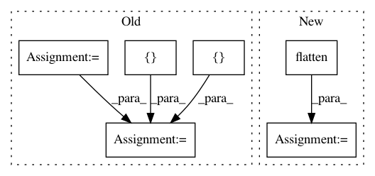

f02b56207713275c749ff7c0d337c49bd3dffe53,examples/simple_but_ugly/tf_models.py,MyModel,_build,#MyModel#,16
Before Change
num_features = images_shape[-1]
num_classes = self.get_from_config("num_classes", 3)
x = tf.placeholder("float", [None, num_features], name="x")
y = tf.placeholder("int32",[None], name="y")
y_oe = tf.one_hot(y, num_classes, name="targets")
w = tf.Variable(tf.zeros([num_features, num_classes]))
b = tf.Variable(tf.zeros([num_classes]))
y_ = tf.nn.softmax(tf.matmul(x, w) + b, name="predictions")
// Define a cost function
//tf.losses.add_loss(tf.losses.softmax_cross_entropy(y_oe, y_))
loss = tf.losses.softmax_cross_entropy(y_oe, y_)
After Change
y_oe = tf.one_hot(y, num_classes, name="targets")
c = conv2d_block(x, 32, 3, conv=dict(kernel_initializer=tf.contrib.layers.xavier_initializer()), max_pooling=dict(strides=4))
f = flatten(c)
f = tf.layers.dense(f, num_classes)
y_ = tf.identity(f, name="predictions")
// Define a cost function
In pattern: SUPERPATTERN
Frequency: 4
Non-data size: 6
Instances
Project Name: analysiscenter/batchflow
Commit Name: f02b56207713275c749ff7c0d337c49bd3dffe53
Time: 2017-10-24
Author: rhudor@gmail.com
File Name: examples/simple_but_ugly/tf_models.py
Class Name: MyModel
Method Name: _build
Project Name: keras-team/keras
Commit Name: a18932cb658c012808dd78bbd7f5bf1fe712e6c9
Time: 2016-01-15
Author: francois.chollet@gmail.com
File Name: examples/neural_style_transfer.py
Class Name:
Method Name:
Project Name: googledatalab/pydatalab
Commit Name: 042392f84f37ec92f97d6b73af2e5957c6d6863e
Time: 2017-05-23
Author: brandondutra@google.com
File Name: solutionbox/code_free_ml/test_mltoolbox/test_analyze_data.py
Class Name: TestGraphBuilding
Method Name: test_make_transform_graph_numerics_gcs
Project Name: googledatalab/pydatalab
Commit Name: 042392f84f37ec92f97d6b73af2e5957c6d6863e
Time: 2017-05-23
Author: brandondutra@google.com
File Name: solutionbox/code_free_ml/test_mltoolbox/test_analyze_data.py
Class Name: TestGraphBuilding
Method Name: test_make_transform_graph_numerics